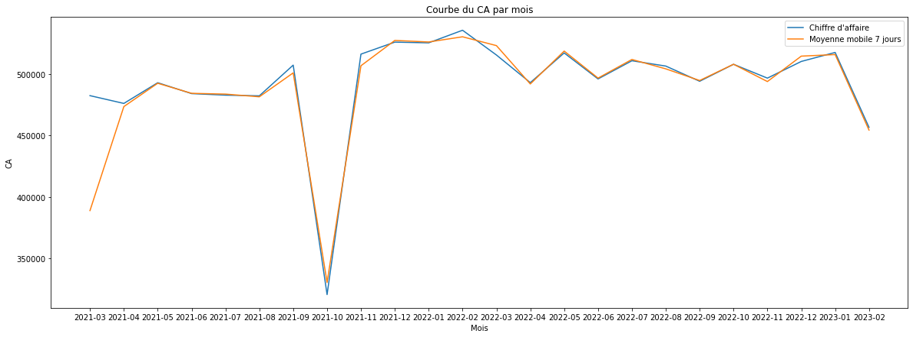
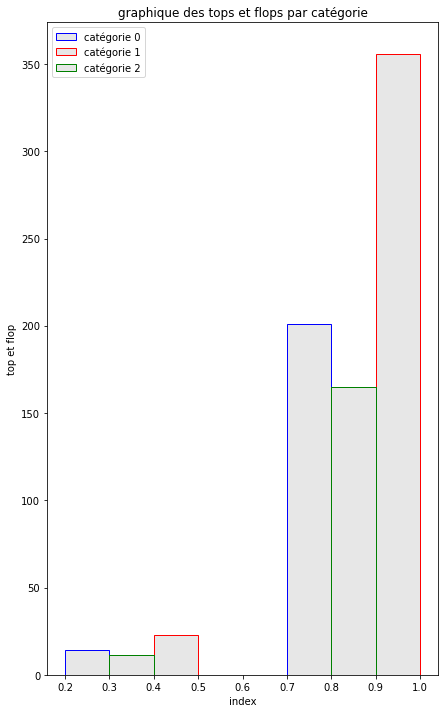

Aujourd'hui, je commence ma mission en tant que consultant Data Analyst chez Lapage, une librairie généraliste en ligne très réputée. Je suis directement rattaché au service Marketing de l'entreprise.
Lapage était à l'origine une librairie physique avec plusieurs points de vente. Cependant, en raison du succès de certains de ses produits et de l'engouement de ses clients, l'entreprise a pris la décision d'ouvrir un site de vente en ligne il y a deux ans. Ma mission consiste à effectuer une analyse après ces deux années d'exercice en ligne. Nous souhaitons évaluer nos points forts, nos points faibles, les comportements des clients, et prendre des décisions stratégiques pour l'avenir.
L'équipe Marketing que j'intègre est composée d'Annabelle, la responsable Marketing, de Julie, chargée d'études en marketing, et d'Antoine, chargé de produit marketing.
Annabelle, la responsable Marketing, m'a envoyé un e-mail de bienvenue avec des instructions. Cette analyse se décompose en deux parties. La première partie concerne l'analyse des indicateurs de vente, comme demandée par Antoine. Les demandes d'Antoine sont détaillées dans l'e-mail qu'il a envoyé à Annabelle.
La deuxième partie de l'analyse se concentre sur le comportement des clients en ligne, en comparaison avec les données provenant des librairies physiques. Julie a des demandes spécifiques à ce sujet, notamment l'analyse des corrélations entre le genre des clients et les catégories de livres achetés, ainsi que les liens entre l'âge des clients et le montant total des achats, la fréquence d'achat, la taille du panier moyen et les catégories de livres achetés.
import pandas as pd
import numpy as np
import matplotlib.pyplot as plt
from scipy import stats
import seaborn as sns
from numpy import trapz
from scipy.stats import ttest_ind
customers = pd.read_csv("customers.csv")
products = pd.read_csv("products.csv")
transactions = pd.read_csv("transactions.csv")
# vérifictation des fichiers;
customers.describe()
products.describe()
products.drop(products.loc[products['price']< 0].index, inplace=True)
products.describe()
products.isnull().sum()
transactions.describe()
transactions.drop(transactions.loc[transactions['id_prod']== 'T_0'].index, inplace=True)
transactions['date'] = transactions['date'].str[0:10]
transactions.sort_values(["id_prod"]).tail()
transactions.isnull().sum()
# fusion de nos csv;
product_transac = pd.merge(transactions, customers)
data = pd.merge(product_transac, products, how= 'left', on= 'id_prod')
data.dropna(subset= ['price'], inplace= True)
data.shape
Lecture et vérification des fichiers :
table customers
| birth | |
|---|---|
| count | 8623.000000 |
| mean | 1978.280877 |
| std | 16.919535 |
| min | 1929.000000 |
| 25% | 1966.000000 |
| 50% | 1979.000000 |
| 75% | 1992.000000 |
| max | 2004.000000 |
Valeur manquante customers :
client_id 0 sex 0 birth 0 dtype: int64table product :
| price | categ | |
|---|---|---|
| count | 3287.000000 | 3287.000000 |
| mean | 21.856641 | 0.370246 |
| std | 29.847908 | 0.615387 |
| min | -1.000000 | 0.000000 |
| 25% | 6.990000 | 0.000000 |
| 50% | 13.060000 | 0.000000 |
| 75% | 22.990000 | 1.000000 |
| max | 300.000000 | 2.000000 |
Supression valeur manquantes :
| price | categ | |
|---|---|---|
| count | 3286.000000 | 3286.000000 |
| mean | 21.863597 | 0.370359 |
| std | 29.849786 | 0.615446 |
| min | 0.620000 | 0.000000 |
| 25% | 6.990000 | 0.000000 |
| 50% | 13.075000 | 0.000000 |
| 75% | 22.990000 | 1.000000 |
| max | 300.000000 | 2.000000 |
Verification qu'il n'y ai plus de valeurs manquantes :
id_prod 0 price 0 categ 0 dtype: int64Table transaction :
| id_prod | date | session_id | client_id | |
|---|---|---|---|---|
| count | 679532 | 679532 | 679532 | 679532 |
| unique | 3267 | 679371 | 342316 | 8602 |
| top | 1_369 | test_2021-03-01 02:30:02.237413 | s_0 | c_1609 |
| freq | 2252 | 13 | 200 | 25488 |
Valeur manquante :
id_prod 0 date 0 session_id 0 client_id 0 dtype: int64Fusion des csv :
(679111, 8)1. Indicateurs et graphiques sur le chiffre d'affaires, y compris une analyse de son évolution dans le temps, avec une décomposition en moyenne mobile pour évaluer la tendance globale.
# Chiffre d'affaire par client;
CA_customers = data.groupby(['client_id','birth']).sum().reset_index().drop(['categ'], axis= 1).sort_values(by= "price")
CA_customers
Le chiffre d'affaire par client.
| client_id | birth | price | |
|---|---|---|---|
| 8151 | c_8351 | 1968 | 6.31 |
| 7918 | c_8140 | 1971 | 8.30 |
| 7889 | c_8114 | 1962 | 9.98 |
| 1556 | c_240 | 1998 | 11.06 |
| 4044 | c_4648 | 2004 | 11.20 |
| ... | ... | ... | ... |
| 2513 | c_3263 | 1985 | 5276.87 |
| 2724 | c_3454 | 1969 | 113637.93 |
| 6337 | c_6714 | 1968 | 153598.92 |
| 4388 | c_4958 | 1999 | 289760.34 |
| 677 | c_1609 | 1980 | 324033.35 |
# Chiffre d'affaire par client par catégorie;
data.groupby(['client_id','birth','categ']).sum().reset_index().sort_values(by='price')
Le chiffre d'affaire par client par catégorie de livre.
| client_id | birth | categ | price | |
|---|---|---|---|---|
| 2330 | c_1912 | 2003 | 0.0 | 2.99 |
| 269 | c_1101 | 2003 | 0.0 | 2.99 |
| 14762 | c_673 | 1999 | 0.0 | 2.99 |
| 2427 | c_1948 | 2004 | 0.0 | 2.99 |
| 9743 | c_480 | 1993 | 0.0 | 2.99 |
| ... | ... | ... | ... | ... |
| 14720 | c_6714 | 1968 | 1.0 | 73246.54 |
| 6311 | c_3454 | 1969 | 1.0 | 83583.02 |
| 1557 | c_1609 | 1980 | 1.0 | 108084.90 |
| 1556 | c_1609 | 1980 | 0.0 | 214447.24 |
| 10152 | c_4958 | 1999 | 2.0 | 250336.34 |
# Chiffre d'affaire total;
CA = data.groupby(['client_id','birth']).sum().drop(['categ'], axis= 1)
CA_total = CA['price'].sum()
print("Le chiffre d'affaire total est de:",round(CA_total/1000000, 2),"M€")
Le chiffre d'affaire total est de: 11.85 M€
# CA par catégorie;
data.groupby(['categ'])[['price']].sum().reset_index().round(2)
Le chiffre d'affaire par catégorie de livre.
| categ | price | |
|---|---|---|
| 0 | 0.0 | 4419730.97 |
| 1 | 1.0 | 4653722.69 |
| 2 | 2.0 | 2780275.02 |
# chiffre d'afffaire par mois;
CA_date_Mois = data.groupby(['date'])[['price']].sum().reset_index().round(2)
CA_date_Mois['date'] = CA_date_Mois['date'].str[0:7]
CA_date_Mois = CA_date_Mois.groupby(['date'])[['price']].sum().reset_index().round(2)
CA_date_Mois
Le chiffre d'affaire par mois.
| date | price | |
|---|---|---|
| 0 | 2021-03 | 482440.61 |
| 1 | 2021-04 | 476109.30 |
| 2 | 2021-05 | 492943.47 |
| 3 | 2021-06 | 484088.56 |
| 4 | 2021-07 | 482835.40 |
| 5 | 2021-08 | 482284.79 |
| 6 | 2021-09 | 507240.68 |
| 7 | 2021-10 | 320798.74 |
| 8 | 2021-11 | 516167.73 |
| 9 | 2021-12 | 525917.28 |
| 10 | 2022-01 | 525338.99 |
| 11 | 2022-02 | 535571.50 |
| 12 | 2022-03 | 515456.53 |
| 13 | 2022-04 | 492998.94 |
| 14 | 2022-05 | 517132.60 |
| 15 | 2022-06 | 496016.12 |
| 16 | 2022-07 | 510783.12 |
| 17 | 2022-08 | 506467.27 |
| 18 | 2022-09 | 494114.53 |
| 19 | 2022-10 | 507917.77 |
| 20 | 2022-11 | 496664.94 |
| 21 | 2022-12 | 510219.50 |
| 22 | 2023-01 | 517540.55 |
| 23 | 2023-02 | 456679.76 |
#creation MM 7 jours;
CA_date_MM = data.groupby(['date'])[['price']].sum().reset_index().round(2)
CA_date_MM['date'] = CA_date_MM['date'].str[0:11]
CA_date_MM = CA_date_MM.groupby(['date'])[['price']].sum().reset_index().round(2)
CA_date_MM['7jours_MM'] = CA_date_MM.price.rolling(7).mean()
CA_date_MM.drop(CA_date_MM.loc[CA_date_MM['date']=='test_2021-0'].index, inplace=True)
#creation du tableau par mois avec sum des MM;
CA_date_MM['date'] = CA_date_MM['date'].str[0:7]
CA_date_MM =CA_date_MM.groupby(['date'])[['price','7jours_MM']].sum().reset_index().round(2)
plt.figure(figsize= (20,7))
plt.plot(CA_date_MM['date'], CA_date_MM['price'], label= "Chiffre d'affaire")
plt.plot(CA_date_MM['date'], CA_date_MM['7jours_MM'], label= "Moyenne mobile 7 jours")
plt.legend()
plt.title("Courbe du CA par mois")
plt.xlabel("Mois")
plt.ylabel("CA")
plt.show()
courbe du CA par mois.

2. Analyse approfondie des références de produits pour identifier les produits les plus performants (tops) et ceux qui rencontrent moins de succès (flops). Cette analyse devrait également inclure une répartition par catégorie de produits.
ref_vente = data.groupby(['id_prod','categ'])[['price']].agg(['count']).reset_index().round(2).sort_values(by=('price', 'count'), ascending=False)
ref_vente
| id_prod | categ | price | |
|---|---|---|---|
| count | |||
| 2589 | 1_369 | 1.0 | 2119 |
| 2642 | 1_417 | 1.0 | 2048 |
| 2639 | 1_414 | 1.0 | 2048 |
| 2731 | 1_498 | 1.0 | 1969 |
| 2651 | 1_425 | 1.0 | 1961 |
| ... | ... | ... | ... |
| 958 | 0_1871 | 0.0 | 1 |
| 664 | 0_1601 | 0.0 | 1 |
| 902 | 0_1820 | 0.0 | 1 |
| 697 | 0_1633 | 0.0 | 1 |
| 799 | 0_1726 | 0.0 | 1 |
#répartition top et flot pour catégorie;
ref_vente_categ0 = ref_vente.loc[ref_vente['categ'] == 0.0]
ref_vente_categ1 = ref_vente.loc[ref_vente['categ'] == 1.0]
ref_vente_categ2 = ref_vente.loc[ref_vente['categ'] == 2.0]
quantile0 = ref_vente_categ0['price','count'].quantile([0.25,0.75])
quantile1 = ref_vente_categ1['price','count'].quantile([0.25,0.75])
quantile2 = ref_vente_categ2['price','count'].quantile([0.25,0.75])
plt.figure(figsize=(7,12))
plt.bar(quantile0.index,quantile0.values,width = 0.1, color=(0.1, 0.1, 0.1, 0.1), edgecolor='blue', label= 'catégorie 0')
plt.bar(quantile1.index +0.2,quantile1.values,width = 0.1, color=(0.1, 0.1, 0.1, 0.1), edgecolor='red', label= 'catégorie 1')
plt.bar(quantile2.index+0.1,quantile2.values,width = 0.1, color=(0.1, 0.1, 0.1, 0.1), edgecolor='green', label= 'catégorie 2')
plt.legend()
plt.title("graphique des tops et flops par catégorie")
plt.xlabel("index")
plt.ylabel("top et flop")
plt.show()

3. Fournir des informations sur les profils des clients, notamment des données relatives à la répartition du chiffre d'affaires entre les différents profils de clients. Il suggère d'utiliser une courbe de Lorenz pour visualiser cette répartition.
# CA par age;
data.insert(8, "age", (2023-data['birth']))
age = data.groupby(['age'])[['price']].agg(['sum']).reset_index().round(2)
age
# courbe lorenz;
depenses = age[age['price','sum']> 0]
dep = depenses['price','sum'].values
n = len(dep)
lorenz = np.cumsum(np.sort(dep)) / dep.sum()
lorenz = np.append([0],lorenz)
plt.figure(figsize= (10,7))
xaxis = np.linspace(0,1,len(lorenz))
plt.plot(xaxis,lorenz, label= 'Courbe de Lorenz')
plt.plot(xaxis, xaxis, label= 'Parfaite répartition')
plt.title('Courbe de Lorenz')
plt.fill_between(xaxis, lorenz, xaxis, color = 'silver', label= 'air A')
plt.fill_between(xaxis, lorenz, color = 'bisque', label= 'air B')
plt.legend()
plt.show()
airB = trapz(lorenz,xaxis)
air = trapz(xaxis,xaxis)
airA = air-airB
coef_gini = airA/(airA + airB)
print("Le coefficient de gini est de:",coef_gini )
CA par age
| age | price | |
|---|---|---|
| sum | ||
| 0 | 19 | 609013.69 |
| 1 | 20 | 178195.78 |
| 2 | 21 | 184177.35 |
| 3 | 22 | 178497.70 |
| 4 | 23 | 165007.98 |
| ... | ... | ... |
| 71 | 90 | 5254.35 |
| 72 | 91 | 5043.19 |
| 73 | 92 | 2815.45 |
| 74 | 93 | 4013.87 |
| 75 | 94 | 3221.85 |
Les demandes de Julie:
# on repere mathématiquement les outliers
# méthode interquartille
# quartille q1, q3 et écart inter:
price = sorted(tableau['price'])
q1 = round(np.percentile(price, 25))
print("Le premier quartille q1 est de:", q1)
q3 = round(np.percentile(price, 75))
print("Le troisieme quartille q3 est de:", q3)
iqr = q3 - q1
print("L'écart interquartille iqr est de:", iqr)
# borne inf et sup:
lower_bound = q1 -(1.5 * iqr)
upper_bound = q3 +(1.5 * iqr)
print('les valeurs sont considéré comme abérante si elles sont compris hors de l intervalle, ',
lower_bound, upper_bound, 'selon la méthode interquartille')
# mise en évidences du nbrs de valeurs abérantes:
tableau_outliers_up= tableau[tableau["price"]>upper_bound]
val_abe_up = tableau_outliers_up['price'].count()
tableau_outliers_down = tableau[tableau["price"]"<"lower_bound]
val_abe_down = tableau_outliers_down['price'].count()
print("Le nombre de valeurs abérantes est de:", val_abe_up + val_abe_down)
Le premier quartille q1 est de: 14
Le troisieme quartille q3 est de: 42
L'écart interquartille iqr est de: 28
les valeurs sont considéré comme abérante si elles sont compris hors de l intervalle, -28.0 84.0 selon la méthode interquartille
Le nombre de valeurs abérantes est de: 32
Question 3 suite :
#methode z score
mean = np.mean(tableau['price'])
std = np.std(tableau['price'])
print('la moyenne des prix est de:', mean)
print("l'écart type des prix est de:", std)
#valeur abérantes avec zscore:
limite = 3
limite_down = -3
outlier = []
for VA_abe in tableau['price']:
z = (VA_abe-mean)/std
if z > limite:
outlier.append(VA_abe)
elif z < limite_down:
outlier.append(VA_abe)
print('les valeurs abérantes sont:', outlier)
# affichage du nbrs de valeurs abérantes
tableau['zscore']= (tableau['price']-mean)/std
val_sup = tableau[tableau['zscore']>3]
val_inf = tableau[tableau['zscore']<-3]
sup = val_sup['price'].count()
inf = val_inf['price'].count()
print("Les valeurs abérantes selon la méthode zscore sont de:",sup + inf)
la moyenne des prix est de: 32.49313725490197
l'écart type des prix est de: 27.791042941002935
les valeurs abérantes sont: [225.0, 126.5, 176.0, 157.0, 137.0, 217.5, 124.8, 175.0, 191.3, 122.0, 135.0, 116.4, 121.0, 121.0]
Les valeurs abérantes selon la méthode zscore sont de: 14